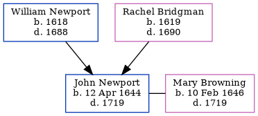

John Newport 1644 - 1719
[ Home ] | [ Calendar ] | [ Surnames Index ] | [ Errors ] | [ Family History ]The child of William Newport and Rachel Bridgman, John Newport, the eight times great-uncle of Nigel Horne, was born in Waltham, Kent, England on 12 Apr 1644. He married Mary Browning at St Alphege, Canterbury, Kent, England on 7 Aug 16731.
He died in 1719 in Wye, Kent, England and was buried there at Ss Gregory & Martin's Church on 19 Sept 17192,3.
Parents
- William was born in 1618
- Rachel was born in 1619
Citations
- Kent Marriages And Banns - Findmypast
- Kent Burials - Findmypast
- England Deaths & Burials 1538-1991 - Findmypast
Media
Kent, Canterbury Archdeaconry burials - GBPRS/CANT/D/95547734
Kent, East Kent marriage index 1538-1754 - GBPRS/EASTKENT/MAR/138411/1
England Deaths & Burials 1538-1991 - R_276185971
Family Tree
Map
Generated by ged2site. Last updated on Jul 3, 2024
Known Issues
Birth date (12 Apr 1644) has no citations
Death date (1719) has no citations